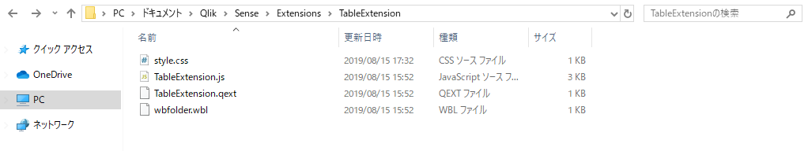

エクステンションのファイル一覧
エクステンションを編集する前に、エクステンションがどんなファイルで構成されているか見てみましょう。
C:\Users\{USERNAME}\Documents\Qlik\Sense\Extensions\TableExtension\を開いてファイル一覧を確認します。
テンプレートから作成されたばかりのエクステンションには4つのファイルがあります。

- style.css
エクステンションを表示するときの見た目を指定するファイルです。 - TableExtension.js
エクステンションの動作を定義するファイルです。 - TableExtension.qext
エクステンションの説明を保存するファイルです。内容はJSON形式になっています。 - wbfolder.wbl
使用するファイル名の一覧が記入されているファイルです。
ファイルを増やす場合はこのファイルに行を追加します。
このチュートリアルでは主にstyle.css TableExtension.jsを編集します。